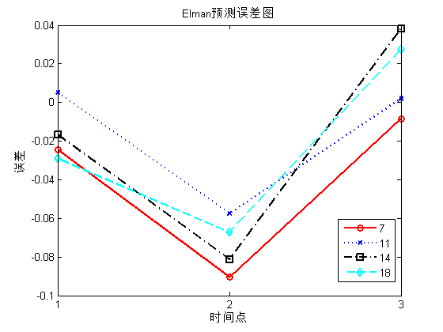

Contents
Matlab神经网络43个案例分析
% 基于Elman神经网络的电力负荷预测模型研究 % by 王小川(@王小川_matlab) % http://www.matlabsky.com % Email:sina363@163.com % http://weibo.com/hgsz2003
清空环境变量
clc; clear all close all nntwarn off;
数据载入
load data;
a=data;
选取训练数据和测试数据
for i=1:6 p(i,:)=[a(i,:),a(i+1,:),a(i+2,:)]; end % 训练数据输入 p_train=p(1:5,:); % 训练数据输出 t_train=a(4:8,:); % 测试数据输入 p_test=p(6,:); % 测试数据输出 t_test=a(9,:); % 为适应网络结构 做转置 p_train=p_train'; t_train=t_train'; p_test=p_test';
网络的建立和训练
利用循环，设置不同的隐藏层神经元个数
nn=[7 11 14 18]; for i=1:4 threshold=[0 1;0 1;0 1;0 1;0 1;0 1;0 1;0 1;0 1]; % 建立Elman神经网络 隐藏层为nn(i)个神经元 net=newelm(threshold,[nn(i),3],{'tansig','purelin'}); % 设置网络训练参数 net.trainparam.epochs=1000; net.trainparam.show=20; % 初始化网络 net=init(net); % Elman网络训练 net=train(net,p_train,t_train); % 预测数据 y=sim(net,p_test); % 计算误差 error(i,:)=y'-t_test; end
通过作图 观察不同隐藏层神经元个数时，网络的预测效果
plot(1:1:3,error(1,:),'-ro','linewidth',2); hold on; plot(1:1:3,error(2,:),'b:x','linewidth',2); hold on; plot(1:1:3,error(3,:),'k-.s','linewidth',2); hold on; plot(1:1:3,error(4,:),'c--d','linewidth',2); title('Elman预测误差图') set(gca,'Xtick',[1:3]) legend('7','11','14','18','location','best') xlabel('时间点') ylabel('误差') hold off;